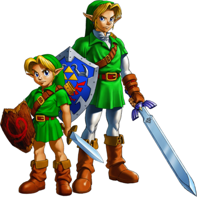

Mi personaje favorito
link
Link es descrito generalmente como un joven Hyliano que reside en el Reino de Hyrule.
En sus inicios, aparecía como un simple espadachín, pero con el paso del tiempo y el lanzamiento de nuevos juegos,
su edad (en un rango que oscila entre los siete y los dieciocho años), apariencia e identidad han sido cambiadas.

me gusta mucho link, es mi juego favorito
Mi juego favorito
Pokemon
Pokemon es una franquicia de medios que originalmente comenzó como un videojuego RPG, pero debido a su popularidad ha logrado expandirse a otros medios de entretenimiento como series de televisión, películas, juegos de cartas, ropa, entre otros, convirtiéndose en una marca reconocida en el mercado mundial.
Las ventas de videojuegos hasta el 1 de diciembre de 2006 habían alcanzado una cantidad de 340 millones de ejemplares (incluyendo la venta de la versión Pikachu de la consola Nintendo 64), logrando ocupar el segundo lugar de las sagas de videojuegos más vendidos de Nintendo. La franquicia celebró su décimo aniversario el 27 de febrero de 2006.

me gusta mucho pokemon